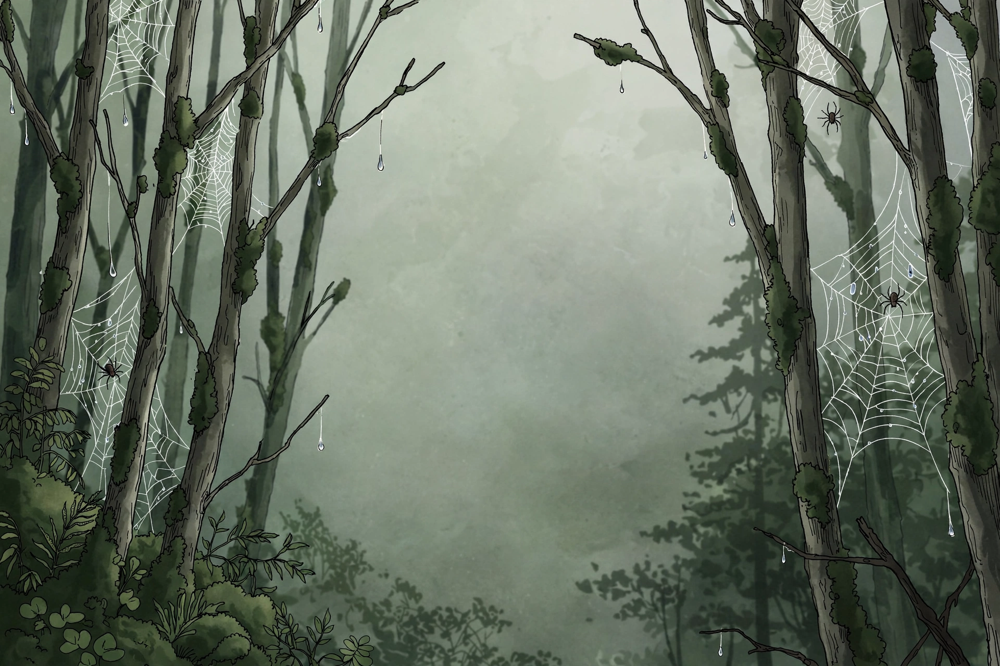
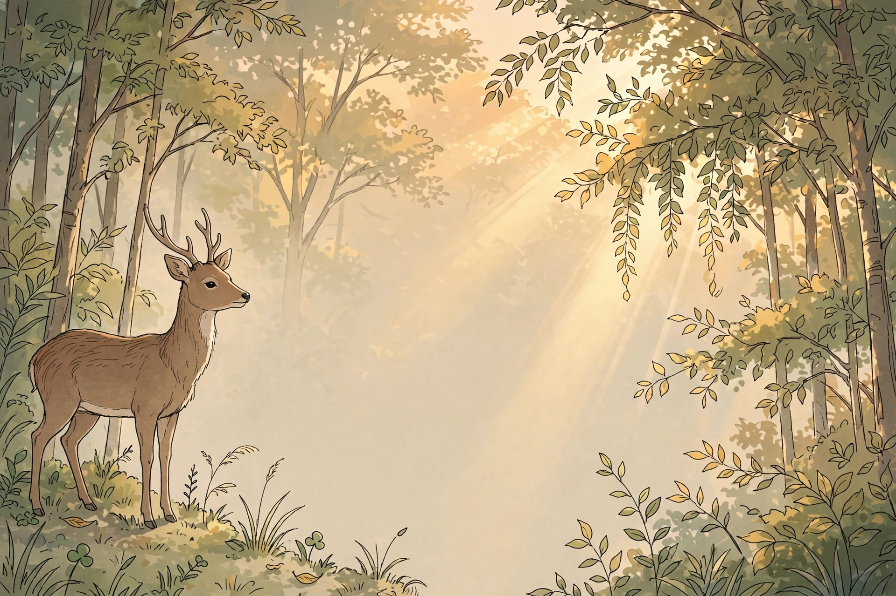
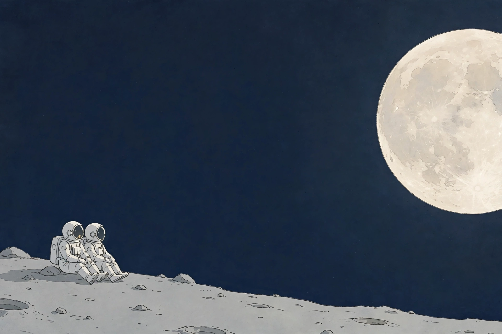
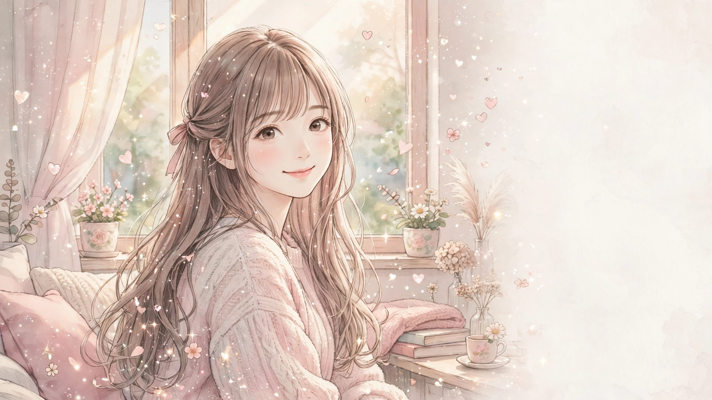
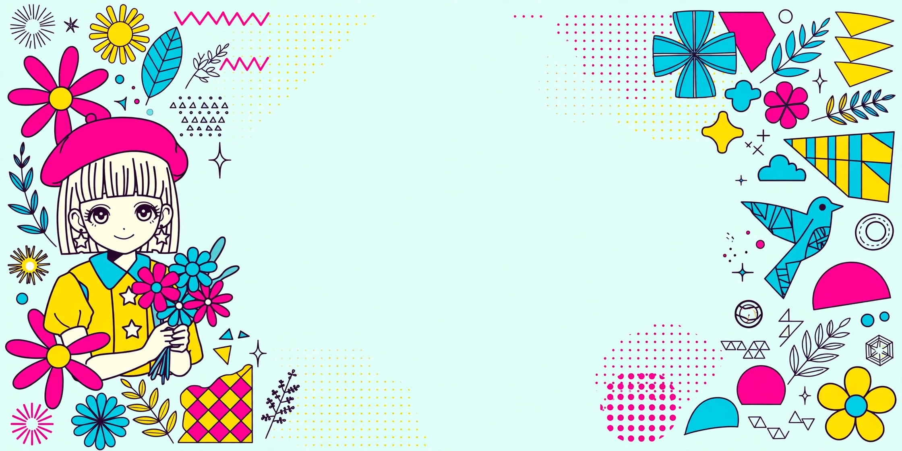

蜘蛛と鬱蒼とした森
Free苔むした暗い森と静かな蜘蛛。雫の光る、しっとりした世界。
A dress-up browser — for PC, free
森の朝、海の底、二人だけの月面。気分のままにブラウザ全体の世界を着せ替えられる、PCのための小さなブラウザです。細い線と静かな色で描かれた9つの世界を、ぜんぶ無料で。

No.01 — Download
お使いのPCに合わせて選んでください。どの版も無料、アカウント登録は要りません。
Mac / Windows / Linux ・ 無料 ・ アカウント登録なし
No.02 — Dress up
下の名前を選ぶと、ブラウザの世界が切り替わります。実際のアプリでは、9テーマぜんぶを同じ手軽さで着せ替えられます。


 鹿と暖かな森
月と二人だけの宇宙飛行士
あなただけの美少女恋人
ゲーム女子とレトロなネオン空間
鹿と暖かな森
月と二人だけの宇宙飛行士
あなただけの美少女恋人
ゲーム女子とレトロなネオン空間
名前を選ぶと着せ替えの雰囲気が伝わります（実際のアプリでは9テーマぜんぶ使えます）
No.03 — Themes
どの世界に住むかは、その日の気分で。細い線と静かな色で描かれた、9つの小さな世界を用意しました。

苔むした暗い森と静かな蜘蛛。雫の光る、しっとりした世界。
夕日の木漏れ日と穏やかな鹿。あたたかい午後の森。

深海の静けさと大きなクジラ。光の差す青の底へ。
暗い空、大きな月、二人だけの宇宙。静けさに包まれる夜。

静かでおしゃれな都会の日常。カフェと本と夕方の街。
ネオンの部屋とレトロゲームの光。夜ふかしの相棒に。

砂紋と苔と灯籠の庭園。ほっとする和の静けさ。

ビビッドでポップなカラーの世界。気分を上げたい日に。
開くたびに迎えてくれる彼女。柔らかなピンクの部屋で。
No.04 — Features
毎日開く道具だから、実用面も手を抜きません。
9つのテーマは全部無料。課金要素はひとつもありません。
ブラウザの中に広告は入りません。世界観を壊さないことが約束です。
ダウンロードしたらすぐ使えます。ログインも個人情報の登録も不要です。
日々のブラウジングに必要な機能はひと通り。いつもの使い心地のままです。
「こんなテーマがほしい」「ここが使いにくい」「この世界が好き」——どんな声でも大歓迎です。届いた声は開発のいちばんの材料になります。次のテーマは、あなたのリクエストから生まれるかもしれません。
No.05 — About ads
No.06 — FAQ
はい。アプリもテーマも全部無料です。課金要素はありません。
まずはPC版のみです。
表示エンジンには実績のあるChromiumを使い、ログイン不要・データ収集なしで設計しています。